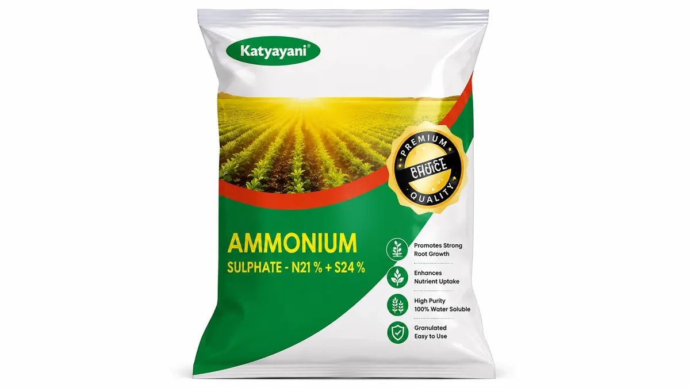

यूरिया, अमोनियम सल्फेट या CAN
Urea vs Ammonium Sulphate vs CAN — Choosing the Right Nitrogen Source
यूरिया की नाइट्रोजन सबसे सस्ती है, पर उसमें गंधक शून्य है। तिलहन, प्याज और अम्लीय मिट्टी में यही एक कमी उपज और गुणवत्ता दोनों गिरा देती है।
✍️ Kunal Rajput — KrashiMitra⏱️ 10 मिनट पढ़ें📅 अगस्त 2026

अमोनियम सल्फेट — नाइट्रोजन के साथ गंधक देने वाली खाद, जो यूरिया में बिल्कुल नहीं मिलता।
बोरी का दाम नहीं, नाइट्रोजन का दाम देखिए
💰
₹13/किलो N
यूरिया की नाइट्रोजन
🚫
0% गंधक
यूरिया में गंधक नहीं है
🍃
ऊपर से पीला
गंधक की कमी की पहचान
📖
भूमिका
नाइट्रोजन देने वाली खाद सिर्फ यूरिया नहीं है। दुकान पर अमोनियम सल्फेट, CAN और अमोनियम क्लोराइड भी रखे रहते हैं, पर ज़्यादातर किसान उन्हें छूते तक नहीं — क्योंकि यूरिया सबसे सस्ता है। और वह सचमुच सबसे सस्ता है: यूरिया से एक किलो नाइट्रोजन करीब ₹13 में पड़ती है, जो किसी भी दूसरे स्रोत से मुकाबले से बाहर है।
लेकिन खाद का चुनाव सिर्फ नाइट्रोजन के दाम से नहीं होता। यूरिया में गंधक शून्य है, कैल्शियम शून्य है, और वह मिट्टी को अम्लीय बनाता है। कई खेतों में उपज इसलिए नहीं बढ़ रही कि नाइट्रोजन कम है — बल्कि इसलिए कि गंधक खत्म हो चुका है, या मिट्टी इतनी क्षारीय है कि डाली गई यूरिया उड़ ही जाती है। इस लेख में — चारों नाइट्रोजन खादों की सीधी तुलना, कौन सी मिट्टी और फसल में कौन सी चुनें, और प्रति किलो नाइट्रोजन का हिसाब खुद कैसे निकालें।
विज्ञापन
🔢
चारों खादों में क्या-क्या है
खाद
नाइट्रोजन
साथ में और क्या
मिट्टी पर असर
यूरिया
46%
कुछ नहीं
अम्लीय बनाता है
अमोनियम सल्फेट
20.6%
करीब 23–24% गंधक
सबसे ज़्यादा अम्लीय बनाता है
CAN (कैल्शियम अमोनियम नाइट्रेट)
25%
कैल्शियम
लगभग उदासीन — अम्लीयता नहीं बढ़ाता
अमोनियम क्लोराइड
25%
क्लोराइड
अम्लीय बनाता है
यूरिया गोल्ड (सल्फर लेपित)
37%
17% गंधक
अम्लीय बनाता है
💡
ध्यान दीजिए कि यूरिया की खाने में सिर्फ नाइट्रोजन है। यही उसकी ताकत भी है और कमज़ोरी भी — सबसे सस्ती नाइट्रोजन, पर उसके साथ कोई दूसरा तत्व मुफ़्त नहीं आता। बाकी तीनों में नाइट्रोजन कम है, पर साथ में एक दूसरा तत्व है जिसकी कीमत अलग से चुकानी पड़ती।
🧮
असली तुलना — बोरी का दाम नहीं, नाइट्रोजन का दाम
दुकान पर बोरी का दाम देखकर तुलना करना गलत है, क्योंकि हर बोरी में नाइट्रोजन की मात्रा अलग है। सही सवाल है — एक किलो नाइट्रोजन कितने की पड़ी? हिसाब दो कदम का है:
🧮
पहला कदम — बोरी में नाइट्रोजन: बोरी का वज़न × नाइट्रोजन प्रतिशत ÷ 100 दूसरा कदम — प्रति किलो दाम: बोरी का दाम ÷ बोरी में नाइट्रोजन
उदाहरण — यूरिया: 45 × 46 ÷ 100 = 20.7 किलो नाइट्रोजन। बोरी ₹266.50 की, तो 266.50 ÷ 20.7 = लगभग ₹13 प्रति किलो नाइट्रोजन। उदाहरण — अमोनियम सल्फेट: 50 × 20.6 ÷ 100 = 10.3 किलो नाइट्रोजन। अगर बोरी ₹1,000 की है, तो 1000 ÷ 10.3 = लगभग ₹97 प्रति किलो नाइट्रोजन।
फर्क चौंकाने वाला है, और इसीलिए किसान यूरिया की तरफ जाता है। पर यह तुलना अधूरी है — अमोनियम सल्फेट की उसी बोरी में लगभग 12 किलो गंधक भी आ रहा है। अगर आपके खेत में गंधक की कमी है तो वह गंधक आपको अलग से खरीदना ही पड़ता, और उसका दाम इस हिसाब से घटा देना चाहिए। यानी:
जहाँ गंधक की कमी नहीं है: यूरिया साफ तौर पर सबसे किफायती नाइट्रोजन है, और तुलना यहीं खत्म हो जाती है।
जहाँ गंधक की कमी है: अमोनियम सल्फेट या यूरिया गोल्ड से नाइट्रोजन और गंधक दोनों एक साथ आ जाते हैं, और अलग से गंधक खरीदने का खर्च बच जाता है।
जहाँ मिट्टी बहुत क्षारीय है: वहाँ यूरिया की काफी नाइट्रोजन उड़ ही जाती है, इसलिए "सस्ता" होना कागज़ पर ही रहता है।
⚠️
यूरिया को छोड़कर बाकी नाइट्रोजन खादों के दाम सरकार तय नहीं करती — वे कंपनी, ग्रेड और राज्य के हिसाब से बदलते रहते हैं। ऊपर का ₹1,000 सिर्फ हिसाब समझाने का उदाहरण है। अपनी दुकान का चालू दाम लेकर यही सूत्र खुद लगाइए, और खाद का चुनाव अपने मृदा स्वास्थ्य कार्ड तथा KVK या कृषि विभाग की संस्तुति से तय कीजिए।
विज्ञापन
🌍
मिट्टी के हिसाब से चुनाव
यही वह हिस्सा है जो ज़्यादातर जगह छूट जाता है। मिट्टी का pH तय करता है कि कौन सी खाद अपना काम कर पाएगी:
मिट्टी
❌ जो कम काम करती है
✅ जो बेहतर है
क्षारीय / चूने वाली (ऊसर)
सतह पर बिखेरी यूरिया — सबसे ज़्यादा उड़ती है
अमोनियम सल्फेट, या यूरिया मिट्टी में मिलाकर
अम्लीय (पहाड़ी, अधिक बारिश वाली)
अमोनियम सल्फेट — अम्लीयता और बढ़ा देता है
CAN — इसमें कैल्शियम है और यह उदासीन रहता है
गंधक की कमी वाली
अकेली यूरिया — गंधक शून्य
अमोनियम सल्फेट, यूरिया गोल्ड, या यूरिया के साथ SSP
रेतीली, ज़्यादा पानी वाली
एक बार में पूरी नाइट्रोजन — बहकर चली जाती है
छोटी-छोटी कई किश्तें, चाहे खाद कोई भी हो
सामान्य उपजाऊ मिट्टी
महँगा विकल्प बिना ज़रूरत
यूरिया — सबसे किफायती, बशर्ते सही तरीके से डाली जाए
💡
मिट्टी अम्लीय है या क्षारीय, यह अंदाज़े से तय नहीं होता। मृदा स्वास्थ्य कार्ड में pH और गंधक दोनों लिखे होते हैं, और वही एक कागज़ इस पूरे फैसले को आसान कर देता है। जाँच सरकारी प्रयोगशाला में मुफ़्त या बहुत कम शुल्क पर होती है।
🌾
फसल के हिसाब से चुनाव
सरसों, सोयाबीन, मूँगफली, सूरजमुखी: ये तिलहन हैं और गंधक इनके लिए तेल बनाने का कच्चा माल है। गंधक की कमी में तेल का प्रतिशत सीधे गिरता है। यहाँ अमोनियम सल्फेट या यूरिया गोल्ड, या फिर यूरिया के साथ SSP का जोड़ सही रहता है।
प्याज, लहसुन, मिर्च: इनकी तीखी गंध और स्वाद ही गंधक वाले यौगिकों से बनते हैं। गंधक वाला स्रोत यहाँ गुणवत्ता पर सीधा असर डालता है।
आलू और सब्ज़ियाँ: यहाँ CAN अच्छा विकल्प है — नाइट्रेट का हिस्सा तेज़ी से काम करता है और साथ में कैल्शियम मिलता है। आलू में क्लोराइड वाली खाद से बचना बेहतर माना जाता है।
चाय और अम्लीय ज़मीन की बागवानी: मिट्टी पहले ही अम्लीय है, इसलिए अम्लीयता न बढ़ाने वाला स्रोत सही रहता है।
धान: ज़्यादातर हालात में यूरिया ही सबसे व्यावहारिक है, बशर्ते बहते पानी में न डाली जाए। कुछ तटीय क्षेत्रों में अमोनियम क्लोराइड भी इस्तेमाल होता है।
गेहूं, मक्का, गन्ना: यूरिया ही मुख्य स्रोत रहता है — असली फर्क खाद बदलने से नहीं, किश्तों और डालने के तरीके से आता है।
तंबाकू और आलू जैसी क्लोराइड-संवेदनशील फसलें:अमोनियम क्लोराइड से बचिए — गुणवत्ता पर असर पड़ता है।
🍃
गंधक की कमी कैसे पहचानें — और यह क्यों बढ़ रही है
गंधक की कमी अब देश के बहुत बड़े हिस्से में मिलती है, और इसकी वजह सीधी है — पहले किसान SSP और अमोनियम सल्फेट डालते थे, जिनसे गंधक अपने आप मिल जाता था। जब से DAP और यूरिया का चलन बढ़ा, तब से गंधक बाहर से आना लगभग बंद हो गया, जबकि फसल हर साल उसे मिट्टी से निकालती रही।
पहचान का सबसे बड़ा सुराग: गंधक की कमी में पीलापन ऊपर की नई पत्तियों से शुरू होता है, नीचे की पुरानी पत्तियों से नहीं। नाइट्रोजन की कमी बिल्कुल उल्टी चलती है — वह नीचे से शुरू होती है।
इसीलिए यह गलती महँगी है: खेत पीला देखकर किसान यूरिया डाल देता है, पर कमी गंधक की थी। नतीजा — पैसा भी गया और पीलापन भी नहीं गया।
तिलहन में: पत्तियाँ प्याले जैसी मुड़ सकती हैं, पौधा छोटा रहता है और फली कम बनती है।
पक्का करने का तरीका: मिट्टी जाँच। मृदा स्वास्थ्य कार्ड में गंधक अलग से लिखा होता है।
💡
यह याद रखने का आसान नियम है: नीचे से पीला — नाइट्रोजन की कमी। ऊपर से पीला — गंधक या किसी सूक्ष्म तत्व की कमी। यही एक बात कई बोरियों की बचत करा देती है।
🚫
ये गलतियाँ कभी न करें
हर पीलेपन का इलाज यूरिया समझना — ऊपर की पत्तियों से शुरू हुआ पीलापन नाइट्रोजन की कमी नहीं है, और वहाँ यूरिया डालना पैसा फेंकना है।
बोरी के दाम से तुलना करना — तुलना हमेशा प्रति किलो नाइट्रोजन पर कीजिए, वरना 20.6% वाली बोरी और 46% वाली बोरी एक जैसी दिखती हैं।
अम्लीय मिट्टी में अमोनियम सल्फेट डालना — यह मिट्टी को और अम्लीय बनाता है और समस्या बढ़ जाती है।
ऊसर या चूने वाली मिट्टी में यूरिया सतह पर बिखेरना — यहाँ नाइट्रोजन सबसे तेज़ी से उड़ती है। मिट्टी में मिलाना यहाँ ज़रूरी है, विकल्प नहीं।
तिलहन में गंधक छोड़ देना — तेल का प्रतिशत सीधे गिरता है और वही आपका दाम तय करता है।
आलू और तंबाकू में क्लोराइड वाली खाद — गुणवत्ता पर असर पड़ता है।
यह मान लेना कि महँगी खाद बेहतर है — जिस खेत में गंधक पर्याप्त है, वहाँ गंधक वाली महँगी खाद खरीदना सीधा नुकसान है। ज़रूरत मिट्टी बताती है, दुकानदार नहीं।
🗓️
एक नज़र में फैसला
आपकी स्थिति
क्या चुनें
सामान्य मिट्टी, गंधक ठीक, अनाज की फसल
यूरिया — सबसे सस्ती नाइट्रोजन
तिलहन की फसल, या मिट्टी जाँच में गंधक कम
अमोनियम सल्फेट या यूरिया गोल्ड, या यूरिया + SSP
मिट्टी अम्लीय (pH कम)
CAN — अम्लीयता नहीं बढ़ाता
मिट्टी क्षारीय / ऊसर
यूरिया मिट्टी में मिलाकर, या अमोनियम सल्फेट
आलू और सब्ज़ियाँ
CAN; क्लोराइड वाली खाद से बचें
प्याज, लहसुन, मिर्च
गंधक वाला स्रोत — अमोनियम सल्फेट या SSP का जोड़
रेतीली मिट्टी, ज़्यादा सिंचाई
खाद कोई भी हो — ज़्यादा किश्तें, कम मात्रा
पता ही नहीं मिट्टी में क्या है
पहले मिट्टी जाँच — बाकी सब उसके बाद
✅
निष्कर्ष
तीन बातें याद रखिए। पहली — नाइट्रोजन के दाम में यूरिया का कोई मुकाबला नहीं, लगभग ₹13 प्रति किलो, इसलिए सामान्य मिट्टी में वही सही चुनाव है। दूसरी — यूरिया में गंधक शून्य है, और तिलहन तथा प्याज-लहसुन जैसी फसलों में यही कमी उपज और गुणवत्ता दोनों गिराती है; वहाँ अमोनियम सल्फेट, यूरिया गोल्ड या SSP का जोड़ ज़्यादा समझदारी है। तीसरी — पीलापन नीचे से शुरू हुआ तो नाइट्रोजन, ऊपर से शुरू हुआ तो गंधक — यह एक पहचान कई बोरियों की बचत करा देती है।
सस्ती खाद वह नहीं जिसकी बोरी सस्ती है, बल्कि वह जो आपके खेत की असली कमी पूरी करती है।
विज्ञापन
❓
अक्सर पूछे जाने वाले सवाल
1यूरिया, अमोनियम सल्फेट और CAN में क्या फर्क है?
नाइट्रोजन की मात्रा और साथ आने वाले तत्व का। यूरिया में 46% नाइट्रोजन है और कुछ नहीं; अमोनियम सल्फेट में 20.6% नाइट्रोजन के साथ लगभग 23% गंधक; CAN में 25% नाइट्रोजन के साथ कैल्शियम। यूरिया और अमोनियम सल्फेट मिट्टी को अम्लीय बनाते हैं, जबकि CAN लगभग उदासीन रहता है।
2सबसे सस्ती नाइट्रोजन कौन सी खाद देती है?
यूरिया — लगभग ₹13 प्रति किलो नाइट्रोजन। 45 किलो की बोरी में 20.7 किलो नाइट्रोजन आती है और उसका दाम लगभग ₹266.50 है। किसी भी दूसरे स्रोत से नाइट्रोजन इससे कई गुना महँगी पड़ती है, क्योंकि यूरिया का दाम सरकार तय करती है।
3प्रति किलो नाइट्रोजन का दाम कैसे निकालें?
दो कदम — पहले बोरी का वज़न × नाइट्रोजन प्रतिशत ÷ 100 से बोरी में नाइट्रोजन निकालिए, फिर बोरी का दाम ÷ उस नाइट्रोजन से भाग दीजिए। जैसे 50 किलो अमोनियम सल्फेट में 10.3 किलो नाइट्रोजन है; बोरी ₹1,000 की हो तो लगभग ₹97 प्रति किलो नाइट्रोजन पड़ेगी।
4गंधक की कमी कैसे पहचानें?
गंधक की कमी में पीलापन ऊपर की नई पत्तियों से शुरू होता है, जबकि नाइट्रोजन की कमी में नीचे की पुरानी पत्तियों से। यही सबसे बड़ा सुराग है — खेत पीला देखकर यूरिया डाल देना यहाँ पैसे की बर्बादी है। पक्की पहचान मिट्टी जाँच से होती है, जिसमें गंधक अलग लिखा आता है।
5तिलहन की फसल में कौन सी नाइट्रोजन खाद बेहतर है?
सरसों, सोयाबीन और मूँगफली जैसी फसलों में अमोनियम सल्फेट या सल्फर लेपित यूरिया गोल्ड बेहतर हैं, क्योंकि गंधक तेल बनने के लिए ज़रूरी है और यूरिया में वह शून्य है। दूसरा रास्ता है यूरिया के साथ SSP का इस्तेमाल, जिससे फॉस्फोरस के साथ गंधक भी मिल जाता है।
6अम्लीय मिट्टी में कौन सी नाइट्रोजन खाद डालें?
CAN यानी कैल्शियम अमोनियम नाइट्रेट, क्योंकि इसमें कैल्शियम होता है और यह मिट्टी की अम्लीयता नहीं बढ़ाता। अम्लीय मिट्टी में अमोनियम सल्फेट डालना उल्टा असर करता है, क्योंकि वही सबसे ज़्यादा अम्लीयता बढ़ाने वाली नाइट्रोजन खाद है।
7यूरिया गोल्ड क्या है?
यह सल्फर की परत चढ़ी यूरिया है, जिसमें 37% नाइट्रोजन और 17% गंधक होता है। सल्फर की परत नाइट्रोजन को धीरे छोड़ती है और साथ ही खेत को गंधक भी दे देती है — यानी एक ही बोरी से दो कमियाँ पूरी होती हैं। यह उन खेतों के लिए उपयोगी है जहाँ गंधक की कमी है।
8क्या महँगी नाइट्रोजन खाद हमेशा बेहतर होती है?
नहीं। जिस खेत में गंधक पहले से पर्याप्त है, वहाँ गंधक वाली महँगी खाद खरीदना सीधा नुकसान है। महँगा विकल्प तभी सही है जब मिट्टी जाँच उस दूसरे तत्व की कमी दिखा रही हो। सामान्य उपजाऊ मिट्टी में सही तरीके से डाली गई यूरिया ही सबसे किफायती रहती है।
🌾
KrashiMitra.in — आपका विश्वसनीय कृषि साथी
मंडी भाव, सरकारी योजनाएं, बीज-खाद की जानकारी और फसल रोग उपचार — सब कुछ हिंदी में।